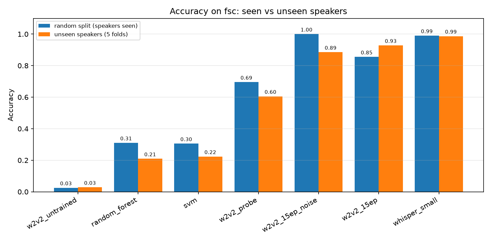
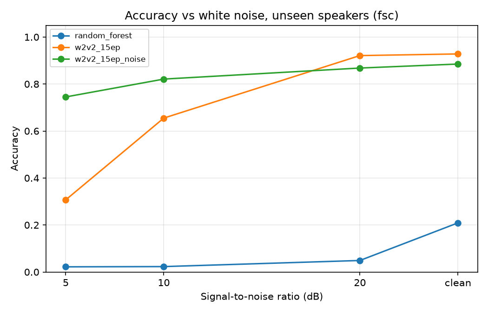
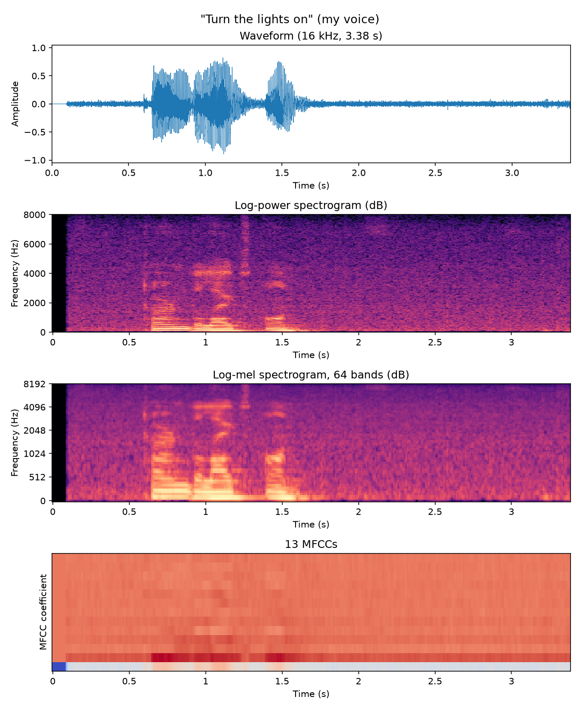

Which of 50 phrases was spoken — by a voice the system has never heard?
Tanvir Ahmed · Md. Shahriar Rakib Rabbi · Mahir Ahmed · Shafil Ahmed
From Fluent Speech Commands (Lugosch et al., 2019): 10 speakers (5 F, 5 M) × 50 smart-home commands × 2 takes = 1,000 clips.
Many commands share most of their words: “switch the lights on” vs “off”.
From L2-ARCTIC (Zhao et al., 2018): 10 non-native speakers — first languages Hindi, Mandarin, Spanish, Korean, Vietnamese × 50 sentences = 500 clips.
Selected by script with fixed rules; audio never redistributed.
All audio: mono, 16 kHz, silence trimmed, peak-normalised, padded to 6 s.
13 MFCCs + Δ + ΔΔ, mean and std (78 values) → k-NN, SVM, Random Forest, XGBoost.
wav2vec 2.0 with a new, untrained head: the chance level.
wav2vec 2.0 for 3 / 8 / 15 epochs, white-noise augmentation; also WavLM, HuBERT and a frozen linear probe.
Zero-shot speech-to-text; the transcript is matched to the nearest of the 50 phrases.
80 / 20, stratified by phrase. The test speakers were also heard in training.
5 folds: 7 training, 1 validation, 2 test speakers; every speaker is tested once.

The same wav2vec 2.0 Base model, on unseen speakers:
For comparison: MFCC + SVM reaches {{fsc:svm:unseen:accuracy}}, MFCC + Random Forest {{fsc:random_forest:unseen:accuracy}}; zero-shot Whisper {{fsc:whisper_small:unseen:accuracy}}.
| unseen speakers | clean | 20 dB | 10 dB | 5 dB |
|---|---|---|---|---|
| wav2vec 2.0 + noise | {{fsc:noise:w2v2_15ep_noise:clean}} | {{fsc:noise:w2v2_15ep_noise:20}} | {{fsc:noise:w2v2_15ep_noise:10}} | {{fsc:noise:w2v2_15ep_noise:5}} |
| wav2vec 2.0, no noise | {{fsc:noise:w2v2_15ep:clean}} | {{fsc:noise:w2v2_15ep:20}} | {{fsc:noise:w2v2_15ep:10}} | {{fsc:noise:w2v2_15ep:5}} |
| MFCC + Random Forest | {{fsc:noise:random_forest:clean}} | {{fsc:noise:random_forest:20}} | {{fsc:noise:random_forest:10}} | {{fsc:noise:random_forest:5}} |

Training with noise costs a little on clean audio but keeps the model usable at 5 dB; MFCC features collapse to chance as soon as noise is added.
| unseen first language | accuracy |
|---|---|
| MFCC + Random Forest | {{l2arctic:random_forest:unseen:accuracy}} |
| Whisper small, zero-shot | {{l2arctic:whisper_small:unseen:accuracy}} |
| Whisper word error rate | unseen folds |
|---|---|
| TenVoices-FSC (native) | {{fsc:wer:whisper_small}} |
| TenVoices-L2 (non-native) | {{l2arctic:wer:whisper_small}} |
Whisper still picks the right sentence almost every time, but its transcripts contain more errors for non-native speakers (hypothesis H5, tested formally in the report).
| a new voice, 3 commands | correct |
|---|---|
| MFCC + SVM | {{demo:svm}} |
| Linear probe | {{demo:w2v2_probe}} |
| Whisper, zero-shot | {{demo:whisper_small}} |

github.com/minhaz-42/Voices-Speech-Recognition-445